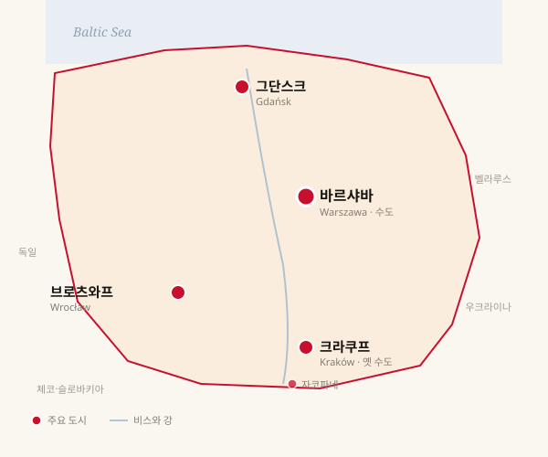
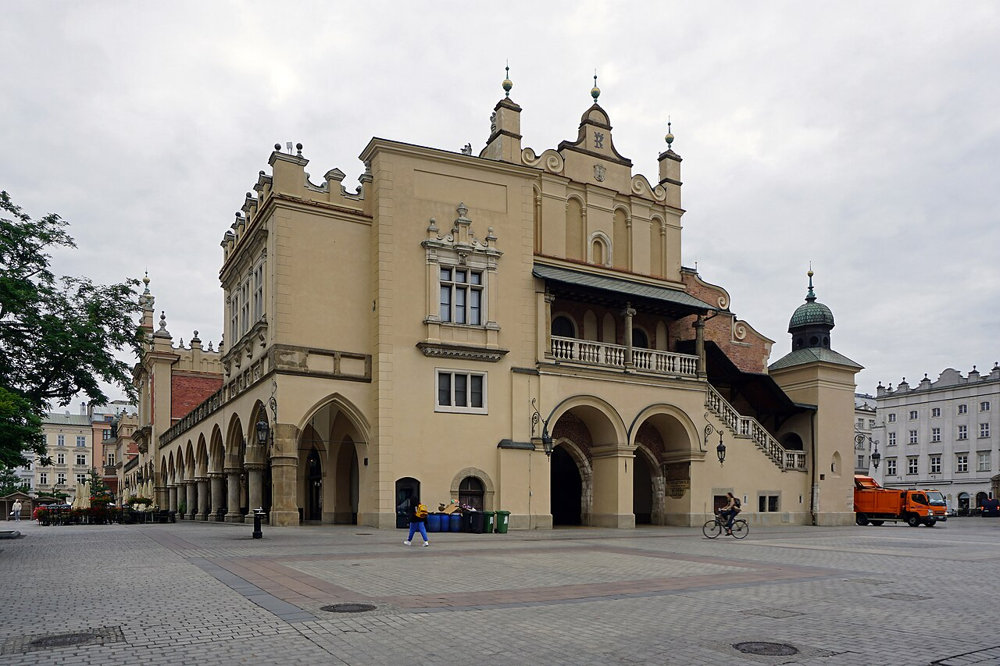
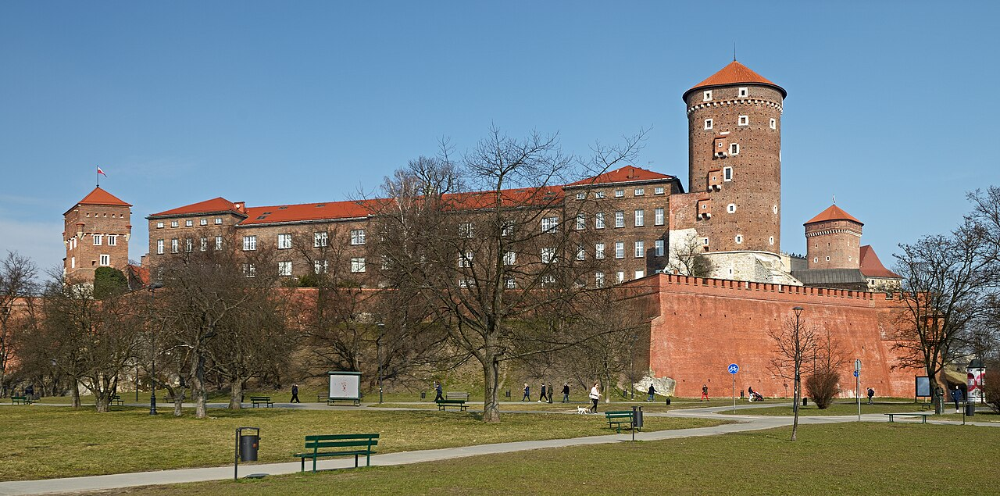
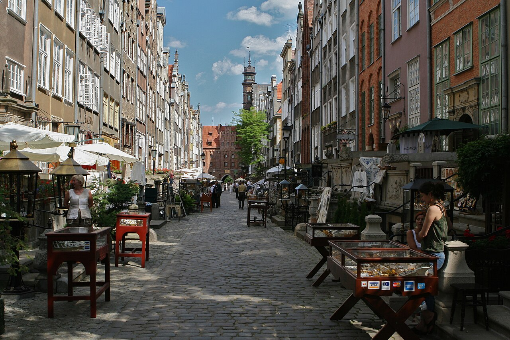
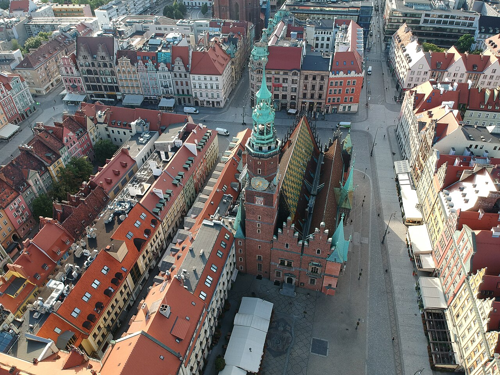
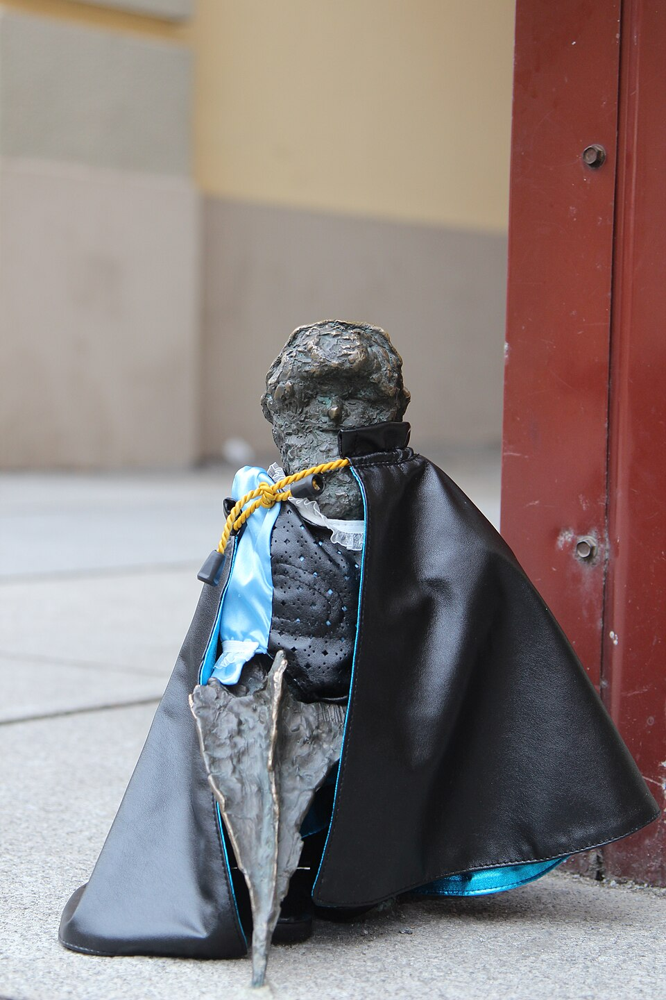
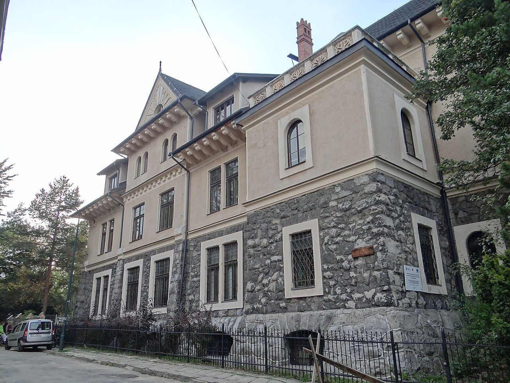
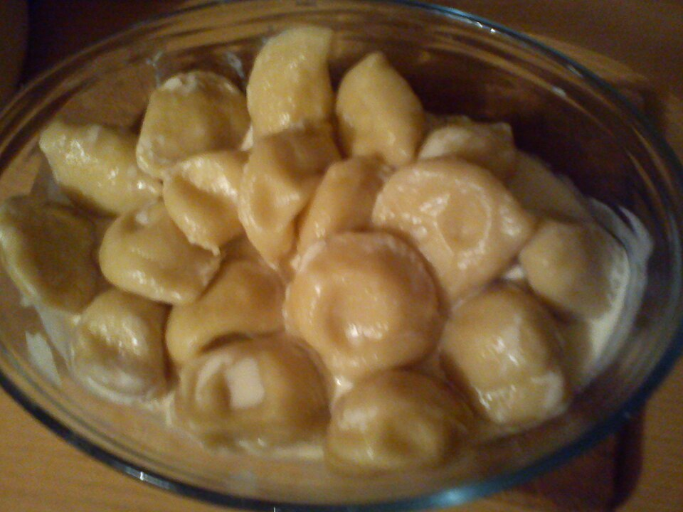
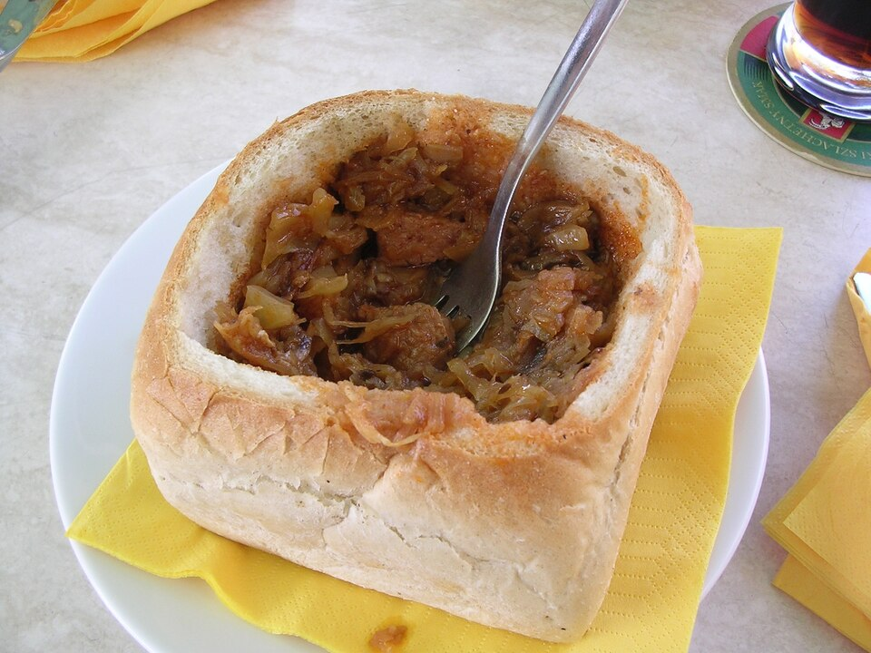
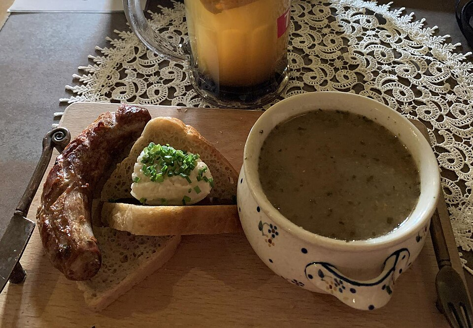

광장에서 비스와 강 방향으로 10분쯤 걸으면 강 위 언덕에 솟은 바벨 성(Wawel)이 보인다. 폴란드 왕들의 700년 거처이자, 바벨 대성당에 카지미에시 대왕·얀 3세 소비에스키·유제프 피우수트스키·아담 미츠키에비치·요한 바오로 2세 등 폴란드 역사상 가장 큰 인물들이 묻혀 있다.
한국의 종묘와 비슷한 자리에 있지만 종묘보다 훨씬 위계가 높다 — 한 나라의 왕실·종교·민족 영웅의 묘가 한 자리에 모인 곳.
지금까지 세 회를 거쳐 폴란드의 좌표·역사·문화를 봤다. 4회는 마침내 현장으로 간다. 크라쿠프·그단스크·브로츠와프·자코파네의 네 풍경, 그리고 피에로기 한 접시를 시킬 때 알아야 할 것들. 첫 여행의 지도를 손에 쥐어드린다.
한국에서 폴란드로 가는 직항은 LOT 폴란드 항공의 인천–바르샤바 노선이다. 약 11시간. 그러나 도착한 그 다음이 더 중요하다 — 어디로 갈 것인가.

네 번째 점은 자코파네 — 도시는 아니지만, 폴란드 첫 여행에 가장 자주 더해지는 산악 휴양지. 크라쿠프에서 2시간이면 닿는다.
오늘은 이 네 곳을 차례로 본 뒤, 마지막에 — 어디를 가든 알아두면 도움이 되는 — 폴란드의 일상·음식·매너·실용 정보를 짚는다.
한국에서 첫 폴란드 여행자가 가장 많이 가는 도시. 그리고 가장 적게 후회하는 도시.

크라쿠프는 1038년부터 1596년까지 — 약 560년간 — 폴란드의 수도였다. 1596년 수도가 바르샤바로 옮겨갈 때까지, 폴란드 왕들은 이 도시에서 즉위하고 묻혔다. 그래서 크라쿠프는 폴란드 역사·정치·종교·학문의 중심이었다.
가장 결정적인 사실 하나 — 크라쿠프는 2차 대전에서 도시 파괴를 피한 거의 유일한 폴란드 대도시다. 바르샤바가 85% 파괴되고, 그단스크와 브로츠와프가 60% 이상 파괴된 것과 달리, 크라쿠프는 거의 원형 그대로 살아남았다. 오늘 우리가 보는 광장의 벽돌은 — 다른 도시들과 달리 — 정말 중세부터 그 자리에 있던 벽돌이다.
1978년 유네스코 세계유산이 처음 지정될 때, 크라쿠프 구시가지가 최초 12곳에 포함되었다(폴란드에서는 첫 등재).
크라쿠프 여행의 중심은 명백히 중앙광장이다. 약 200m × 200m의 정사각형, 유럽 최대 규모의 중세 광장 중 하나. 광장 가운데를 가로지르는 르네상스 양식의 긴 건물이 직물회관(Sukiennice) — 14세기 모직물 거래소로 시작해 지금은 1층 기념품 시장, 2층 19세기 회화관이 있다.
광장 동쪽 끝에 솟은 두 개의 다른 높이의 탑이 성 마리아 성당(Kościół Mariacki)이다. 그리고 — 폴란드 여행에서 가장 자주 회자되는 한 가지가 — 이 성당 탑에서 매시간 정각에 시작되는 짧은 트럼펫 연주, 헤이나우(Hejnał Mariacki)다.

광장에서 비스와 강 방향으로 10분쯤 걸으면 강 위 언덕에 솟은 바벨 성(Wawel)이 보인다. 폴란드 왕들의 700년 거처이자, 바벨 대성당에 카지미에시 대왕·얀 3세 소비에스키·유제프 피우수트스키·아담 미츠키에비치·요한 바오로 2세 등 폴란드 역사상 가장 큰 인물들이 묻혀 있다.
한국의 종묘와 비슷한 자리에 있지만 종묘보다 훨씬 위계가 높다 — 한 나라의 왕실·종교·민족 영웅의 묘가 한 자리에 모인 곳.
중앙광장에서 남쪽으로 15분, 바벨 성을 지나면 카지미에시(Kazimierz) 지구가 있다. 14세기부터 1939년까지 약 600년간 폴란드의 가장 큰 유대인 공동체 중 하나가 살던 곳이다. 7개의 시나고그가 한 동네에 모여 있는 — 유럽 전체에서도 보기 드문 — 자리다.
2차대전 점령기에 이 동네 유대인은 게토로 옮겨졌다 사라졌고, 카지미에시는 오랫동안 폐허였다. 1990년대 스티븐 스필버그의 쉰들러 리스트(1993)가 이곳에서 촬영되면서 다시 주목을 받았고, 지금은 카페·갤러리·시나고그 박물관이 모인 크라쿠프에서 가장 활기 있는 동네 중 하나가 되었다.
2회차에서 본 아우슈비츠-비르케나우는 크라쿠프에서 서쪽으로 약 65km, 차로 1시간 반 거리에 있다. 폴란드 여행자 대부분이 크라쿠프를 거점으로 당일 여행을 다녀온다. 사전 예약 권장(특히 가이드 투어), 무거운 마음의 준비도.
크라쿠프가 폴란드의 옛 정신이라면, 그단스크는 폴란드의 바다와 자유다.

그단스크는 폴란드의 북쪽 발트 해안에 자리한 항구 도시다. 13세기부터 한자동맹(Hanseatic League)의 주요 도시 중 하나로 번성했다. 한자동맹은 발트해 무역을 지배한 독일 도시들의 연맹 — 그래서 그단스크는 폴란드 왕국 영토 안에 있으면서도 오랫동안 독일계 시민들이 운영하는 자유 도시의 성격을 띠었다. 그 다중 정체성이 그단스크의 깊이다.
중세부터 그단스크의 가장 큰 수출품 중 하나가 발틱 호박(amber)이었다. 발트해 연안에서 채집되는 화석화된 송진. 황금색에서 갈색, 우유빛 흰색까지 다양한 색을 가진 이 보석은 — 그단스크의 별명을 "세계의 호박 수도"로 만들었다.
호박길의 중심이 위 사진의 마리아츠카 거리(Ulica Mariacka)다. 양옆 17세기 건물들 앞에 돌계단으로 만든 테라스(przedproża)가 펼쳐져 있고, 거의 모든 건물 1층이 호박 보석 공방·가게다. 100m 남짓한 짧은 거리지만, 그단스크 여행 사진의 80%가 여기서 찍힌다고 해도 과장이 아니다.
거리 끝에는 14–15세기 벽돌 고딕의 거대한 성 마리아 성당(Kościół Mariacki)이 있다 — 세계 최대급 벽돌 교회 중 하나, 약 25,000명을 수용할 수 있다. (크라쿠프의 성 마리아 성당과 이름이 같지만 다른 건물.)
2회차에서 본 1939년 9월 1일 새벽 4시 45분의 첫 발 — 그것이 발사된 곳이 정확히 그단스크 항구의 베스테르플라테(Westerplatte) 반도다. 독일 전함 슐레스비히-홀슈타인이 폴란드 수비대 진지에 포격을 가하면서 2차대전이 시작되었다. 7일간의 폴란드 수비대 저항(Bitwa o Westerplatte)은 폴란드 영웅서사의 한 페이지다.
오늘 그단스크 항구 베스테르플라테에는 추모비와 박물관이 있다. 도심에서 트램·버스·페리로 약 30–40분.
그리고 — 2회차의 마지막 사건이 일어난 곳이 바로 여기다. 1980년 8월 그단스크 레닌 조선소 파업, 자유 노조 연대(Solidarność)의 결성. 1989년 동구권 도미노의 첫 패가 떨어진 도시.
지금 그 자리에는 유럽연대센터(Europejskie Centrum Solidarności, ECS)가 서 있다. 2014년 개관한 현대적 박물관으로, 1980년 파업의 17일을 시간순으로 따라가는 전시가 유명하다. 그단스크 여행에서 빠뜨리지 말아야 할 한 곳.
크라쿠프와 그단스크 다음으로 폴란드 첫 여행자에게 추천되는 두 곳. 한 곳은 동화 같은 도시, 다른 한 곳은 폴란드의 알프스다.

브로츠와프(Wrocław)는 폴란드 남서부 오드라 강 위에 자리한 도시다. 인구 약 65만으로 폴란드 4대 도시 중 하나. 약 12개의 섬과 100개 이상의 다리로 이루어진 독특한 지형 때문에 — 베네치아·암스테르담과 함께 — 유럽의 "다리 많은 도시"로 자주 꼽힌다.
브로츠와프의 가장 흥미로운 점은 이 도시의 정체성 자체에 있다. 13세기부터 1945년까지 — 약 700년간 — 이 도시는 독일어 이름 브레슬라우(Breslau)로 불리며 보헤미아·합스부르크·프로이센·독일의 영토였다. 1945년 얄타 회담 이후 국경 200km 서진(2회차 참조)으로 폴란드 영토가 되었고, 독일인 주민이 추방되고 동부 폴란드(특히 리비우/리브프) 출신 폴란드인이 이주해 채워졌다.
그래서 브로츠와프는 — 같은 도시지만 — 두 개의 역사를 가지고 있다. 1945년 이전의 독일 도시 브레슬라우, 1945년 이후의 폴란드 도시 브로츠와프. 두 정체성이 어떻게 한 도시 안에 공존하는지 보는 것이 이 도시 여행의 깊이다.

브로츠와프의 가장 사랑받는 트레이드마크는 — 난쟁이(krasnal)들이다. 도시 길거리, 카페 입구, 다리 난간, 가로등 아래 등 — 시내 곳곳에 작은 청동 난쟁이 동상이 약 600개 이상 설치되어 있다.
1980년대 반(反)공산주의 운동 단체 "오렌지 대안(Pomarańczowa Alternatywa)"의 상징이 난쟁이였다. 정권의 검열을 피해 거리에 난쟁이를 그렸던 이들의 유산이, 1989년 이후 시 정부가 거리 동상으로 옮긴 것. 정치 풍자가 동화로 굳어진 사례다.
관광객이 도시 지도를 들고 난쟁이를 찾는 것이 브로츠와프 여행의 한 장르가 되었다.

자코파네는 폴란드 남쪽 끝, 슬로바키아 국경에 가까운 타트라 산맥 산자락의 작은 도시다. 인구 약 27,000 — 도시라기보다 큰 마을이다. 그러나 폴란드인에게 이 마을의 의미는 한국인의 강원도 산자락과 비슷한 — 일상에서 떠나 산으로 가는 휴양지 — 가 그 이상이다.
19세기 후반, 분할기 폴란드 지식인들이 — 합스부르크령 갈리시아에 속해 비교적 자유로웠던 — 이곳에 모이면서 자코파네는 폴란드 문화의 한 둥지가 되었다. 시인 미츠키에비치(이미 사망 후이지만), 화가 비트키에비치, 작가 셰모린스키 등이 자코파네를 사랑했고, 자코파네 고유의 목조 건축 양식이 발전했다 — 현재 폴란드 산악 문화의 상징.
자코파네에서 약 20km 떨어진 타트라 산맥 안에 모르스키에 오코(Morskie Oko) 호수가 있다. "바다의 눈"이라는 뜻의 이름처럼, 산 한가운데 푸른 호수 풍경으로 폴란드에서 가장 사진이 많이 찍히는 자연 풍경 중 하나. 차 + 등산을 합쳐 약 5–6시간 코스. (1회차 § 좌표에서 한 번 본 그 호수다.)
현지인처럼 먹고, 현지인처럼 인사하고, 폴란드인이 좋아하는 작은 매너 한 가지씩.

피에로기(Pierogi) — 폴란드 만두. 한국 만두와 닮았지만 속 재료가 다양하다. 대표 종류는 다음 셋:
대개 5–8개 한 접시, 약 25–35즈워티(8–12천 원).

비고스(Bigos) — 양배추(주로 사우어크라우트)와 다양한 고기·소시지·버섯을 오래 끓인 스튜. 여러 날 끓일수록 맛이 깊어진다는 특징. 판 타데우슈에 시로 묘사된 폴란드 국민 음식.
겨울에 특히 좋다. 빵과 함께 한 접시면 든든한 한 끼.

주레크(Żurek) — 발효시킨 호밀(zakwas)을 끓여 만든 신맛 수프. 보통 흰 소시지와 삶은 달걀을 곁들이고, 빵으로 만든 그릇(chleb wydrążony)에 담아 내는 식당도 많다.
다른 두 가지를 더 알아두면 좋다:
폴란드는 EU 회원국이지만 유로존이 아니다. 통화는 폴란드 즈워티(Złoty, 줄여서 PLN 또는 zł). 100그로시(grosz) = 1즈워티.
폴란드인은 다른 슬라브 국가에 비해 영어를 잘하는 편이다. 특히 대도시 젊은 세대는 거의 무리 없이 소통 가능. 그러나 폴란드어 한 마디가 분위기를 완전히 바꾼다. 폴란드인 대다수가 자기 언어를 외국인이 시도하는 것을 큰 호의로 받아들인다.
처음 폴란드를 가는 사람에게 한 도시만 추천하라면 — 대부분 크라쿠프를 답한다. 중세 정취가 가장 진하고, 도시 자체가 작아 도보로 거의 다 돌 수 있으며, 아우슈비츠까지 한 시간 거리에서 폴란드 역사의 가장 무거운 자리도 함께 마주할 수 있기 때문이다.
두 도시를 묶으면 크라쿠프 + 바르샤바 또는 크라쿠프 + 그단스크. 세 도시를 묶으면 셋 다 + 자코파네 1박. 한 주 일정이면 네 도시 모두를 균형 있게 묶을 수 있다.
지금까지 1–4회를 통해 우리는 폴란드의 좌표·역사·문화·도시를 봤다. 그러나 — 1·2회 도중 자주 언급되었듯 — 수도 바르샤바는 별도의 무게를 가진 도시다. 한 번 사라졌다가 다시 쌓아 올린 도시. 다음 5회·6회 두 번에 걸쳐 그 도시 안으로 깊이 들어간다.